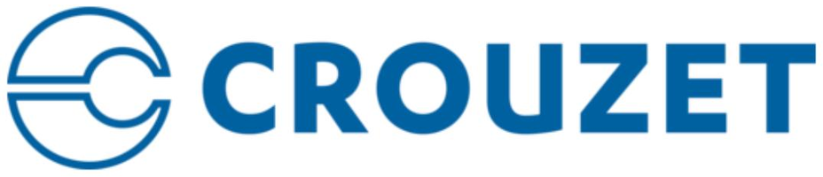
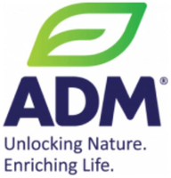
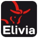
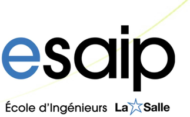
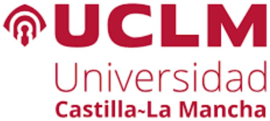
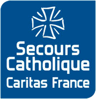

About me
// I graduated from ESAIP as an engineer in risk management and environment, majoring in industrial and natural risks, and I specialise in occupational health and safety.
My internships took me through agri-food, industrial electronics and cosmetics: hazardous energy control at ADM, environmental analysis at Crouzet, quality and safety of weighing areas at L'Oréal. Two Erasmus semesters, in Liberec and then Toledo, taught me to work in English and Spanish.
Since September 2026 I have been on a work-study contract at Danone, in the Global Health, Safety and Wellbeing team, where I support the rollout of group safety initiatives across sites.
Journey
Experience
Global Health, Safety and Wellbeing
Danone · Work-study · Paris
- Support the implementation of group safety initiatives by coordinating with local teams, facilitating communication and tracking deployment across sites.
QEHS Engineer (internship)
L'Oréal · Aulnay-sous-Bois
- Led the shift to a more natural production, reducing preservatives while keeping product quality.
- Audited and improved equipment cleaning protocols; corrective actions in line with technical and budget priorities.
- Weighing areas: quality and safety risk assessment, standardised ORP processes, better workflows.
- Wrote the quality deliverable for weighing and utility water; installation, operational and performance qualification.
- Ran Quality and Safety training sessions for production teams.

Safety Environmental Engineer (internship)
Crouzet · Valence
- Updated the environmental aspects assessment: identification, evaluation and prioritisation of significant environmental aspects, then follow-up.
- Took part in prevention routines: line audits, HSE briefings, near-miss analysis.
- Created HSE documentation.

Industrial Risk Engineer (internship)
ADM (Evialis) · Longué-Jumelles
- Wrote lockout/tagout (LOTO) procedures for electrical, mechanical, pneumatic, hydraulic and thermal equipment.
- Updated existing procedures, trained staff and raised awareness on safe machine use.

Production Assistant (fixed-term)
Elivia · Saint-Barthélemy-d'Anjou
Education

Engineering degree, risk management and environment
ESAIP, School of Engineering · Angers

Erasmus, environmental sciences
Universidad de Castilla-La Mancha · Toledo, Spain
Erasmus, mechanics, electronics and environment
Technical University of Liberec · Czech Republic
Volunteering

Mathematics tutor (volunteer)
Secours Catholique · Angers
- One-to-one maths tutoring, with support adapted to each pupil's pace.
Skills & Tools
Occupational health and safety
- Risk assessment, single risk assessment document (DUERP)
- Lockout/tagout (LOTO)
- Root cause trees, near-miss analysis
- Ergonomics, line audits, HSE briefings
Environment
- Environmental analysis, significant aspects
- Classified installations (ICPE)
- Carbon footprint
- GIS mapping with QGIS
Quality and management systems
- ISO 9001, 14001, 45001, 50001, 26000
- PDCA cycle, FMEA
- IQ / OQ / PQ qualification
- Writing procedures and quality deliverables
Training and coordination
- Team training and awareness
- Coordination across sites
- Project management
- Corrective action plans and budget follow-up
Tools
- QGIS: geoprocessing, layouts
- Advanced Excel: pivot tables, formulas
- Microsoft Office